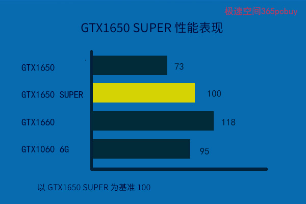

文章标题
发表时间：2019-11-10 文章浏览次数：2165 作者：pc大湿
前言
在第十代N卡中，GTX1060 6G（下文简称GTX1066）一度风光无限，频频登上各大媒体评测头版，每每站在舞台的正中央，连老大哥GTX1080\1070这些，常常也只能为其伴舞......
即使GTX16系列出来后，他也还能凭借出色的性价比，常常成为人们的座上宾。
然而，再闪亮的明星，也有失去光环的那一天。
当前，站在舞台中央的，是：GTX1650 SUPER
正文
从名称看，这个GTX1650 SUPER属于”50“级的，只能算”勉强能打“。
在显卡世界里，有着严格的等级制度。如：GTX1050到GTX1060提升一个档次，GTX1060到GTX1070又提升一个档次。
要提升半个档次呢？加个“Ti”，含义为加强版。
前不久，冒出个新后缀“SUPER”，字面解释是超级版，实际也是表示原版本的增强型号。
那么问题来了，都是加强版，哪个更厉害呢？
照理说，这个SUPER的江湖地位比Ti还要低一点，如：GTX1660Ti>GTX1660 SUPER ，RTX2080Ti>RTX2080 SUPER。
因此，满打满算，一个SUPER也最多值“半个级别”，其幅度为——
GTX1660 SUPER比GTX1660提升：12%
RTX2060 SUPER比RTX2060提升：16%
RTX2070 SUPER比RTX2070提升：12%
RTX2080 SUPER比RTX2080提升：6%
由此看出，打一针“SUPER”激素，性能可以提升的幅度在6~16%之间。
不过，有个人比较特殊，GTX1650，这一针下去变成了GTX1650 SUPER，肌肉疯长，力量暴增，性能提升幅度达到了37%！这已经不是提升半个档次了，完全就是两个不同级别的产品。
GTX1650 SUPER的不同处已经用黄色字体标注出来，相比GTX1650，主要有三点进步：
1、增加了流处理器数量。
2、提升了核心频率
3、提升了显存带宽
四款显卡跑分如下：
|
GTX1650 SUPER跑分对比 |
|||
| 3DMARK FSE | 3DMARK TS | 相对性能 | |
| GTX1650 | 3960 | 3382 | 73 |
| GTX1650 SUPER | 5285 | 4704 | 100 |
| GTX1660 | 6418 | 5503 | 118 |
| GTX1066 | 6107 | 4003 | 95 |
GTX1650SUPER和GTX1066的对比是个难点，二者在FSE和TS上各有胜负。由于新驱动对图灵优化更好了，不少大作对DX12优化也更好了，直接采用【FSE+TS对比法】会发现GTX1066略高于GTX1650S，这和实际游戏表现相左，因此采用加权算得四款显卡的相对性能。（下图）

之前，GTX1650和GTX1660之间的空挡较大，可能会出现这样的情况：
——————————
N卡代理：“我们的GTX1660不错，最低1499元，一旦拥有，别无所求。”
顾客：“贵了。”
N卡代理：“那来个GTX1650吧，很不错的。”
顾客：“性能低了些，有没有1200元左右的？没有？那我去选A卡了。”
N卡代理：“大哥，不忙走，我们还有GTX1066，只要1299元。”
顾客：”GTX1066是2016年的产品了，买到二手翻新的就是掉泥坑，要买个返修的那就是掉粪坑，那我不是比小强还惨？“
Ｎ卡代理：“哎......”
——————————
在独立显卡市场的海洋中，AMD和NVIDIA两家都在编制着自己的渔网，顾客有点像鱼，如果网眼大了，有的鱼就打捞不上来，文中对话的顾客就像漏网之鱼，GTX1650的出现，补上了N家渔网上1200元级的漏洞。
GTX1066把性价比王冠交给了GTX1650 SUPER
可能有人会想，既然新的更好，为什么老的GTX1060 6G现在反而更贵一点呢？
主要是名气，GTX1066名气太大了，凭借更大的显存，多100元也还不愁生意。
少2GB显存，这不是问题，多数游戏并不需要太多的显存。这个级别的显卡，无需考虑考虑4K分辨率，极限就是2K，4GB已经够用。
如果非要霸王硬上弓，强行设置到4K+极高画质，此时的GPU实际上也严重不足了。一般的，显卡性能不足的真凶是GPU，显存不足只能算帮凶。
例如：《孤岛惊魂5》算是对显卡要求比较高的，2K分辨率、极高画质下，预估占用3.03G显存。
图灵家族中的性价比冠军（衡量标准是：每一元能买到的性能分值）
在谈及性价比的时候，人们经常争吵得面红耳赤。实际上，不同架构、不同代数的GPU，由于功耗、游戏优化、对DX12支持度、残值率等不同，直接对比不合适，因为这些因素无法去量化。如果一定要比，那么就只能“心无杂念”，限定在某一代内部比较公平。
在图灵家族中，简单地按【FSE+TS】总分除以价格，会有如下结果：
GTX1650：7342/999=7.35（含义为每一元能买到的性能分数，下同）
GTX1650 SUPER：9989/1199=8.33
GTX1660：11921/1499=7.95
......
有兴趣可以算算，在目前价格下，GTX1650 SUPER是比值唯一超过8的型号，成功接班GTX1066。
结束语
在图灵世界中，如果说RTX2080TI是性能的领军人物，那么GTX1650 SUPER则是性价比的冠军。不过，这仅仅是“理论上的暂时第一”。在选购显卡时，需求和预算才是第一位的。2K级的3A大作需要考虑RTX2060S以上档次，中小型网游用GTX1650已经足够，冠军，也不一定是最合适的选择。